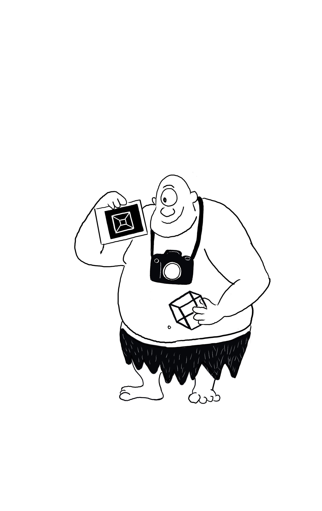

Image Analysis and Computer Vision

Politecnico di Milano, 2025/2026
This page collects some material for the the practical sessions of Image Analysis and Computer Vision taught by Prof. Caglioti. Please consult weebep for other resources.
Theses in Computer Vision available!
If you are interested in doing a thesis in Computer Vision send me an email to schedule a meeting!
Material
- Shared folder collecting the source files and the data I used during the practical sessions.
- Introduction to the course Slide by Prof. Caglioti
- Recordings of my practical sessions link
- The template for the report of the final project: zip file
Introduction to image analysis

- Slides
- Introduction to MatLab: demo code.
- Image manipulations: demo code
- Image transformations: demo code
Template matching, linear filters

Homogeneous coordinates, lines and vanishing points

- Homogenous coordinates, points line and duality: demo code.
- Drawing a cube in isometric projection: demo code.
Extra:
- Vanishing points, vanishing lines and affine rectification: demo code.
- Affine measurements of objects on a plane: demo code.
- Horizon from three equally spaced coplanar lines: demo code.

Conic and Homography estimation via DLT

- Conic estimation via DLT: demo code.
- Homography estimation via DLT: demo code.
- Warping and bilinear interpolation: demo code.
- Image stiching: demo code.
- Image rectification: demo code.
Here are some of the functions employed (please note that these functions are for didactic purposes only).
Rectifications

- Affine rectification: demo code.
- Metric rectification: demo code.
- Metric rectification stratified: demo code.
- Metric rectification from one circle: demo code.
- Metric rectification from two circles: demo code.
Robust fitting

- Slides
- Random Sample Consensus : demo code.
- Least Median of Squares: demo code.
- Sequential Msac: demo code.
- Hough transform: demo code
Matching